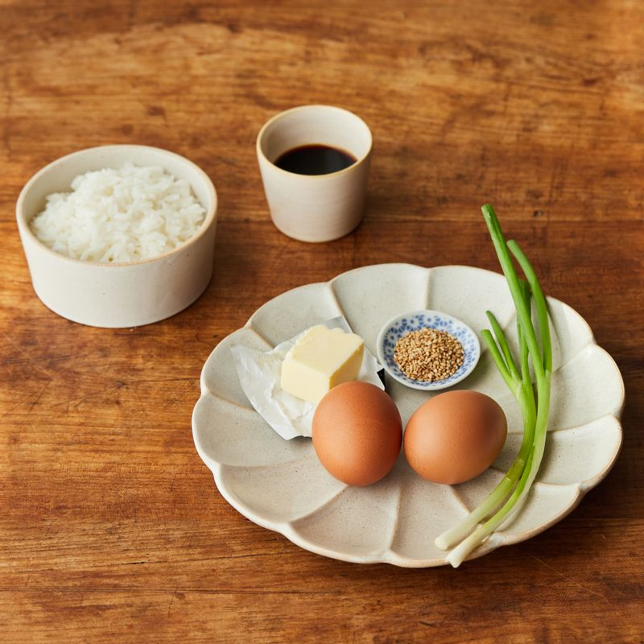
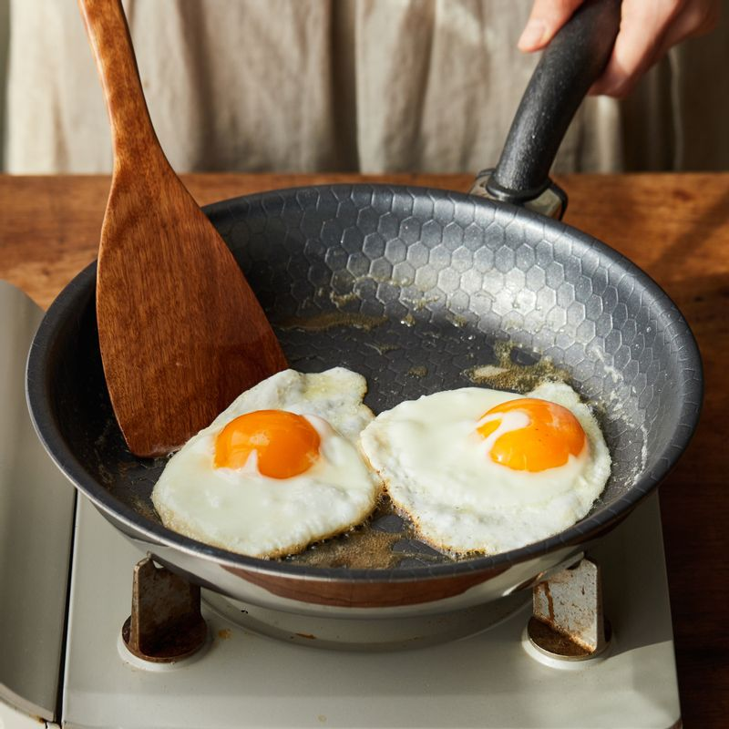
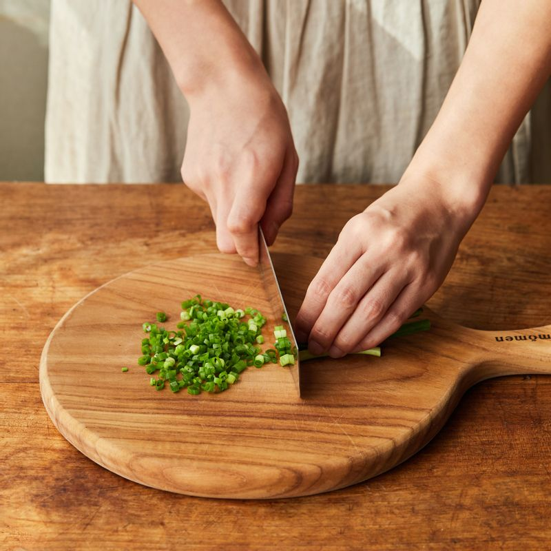
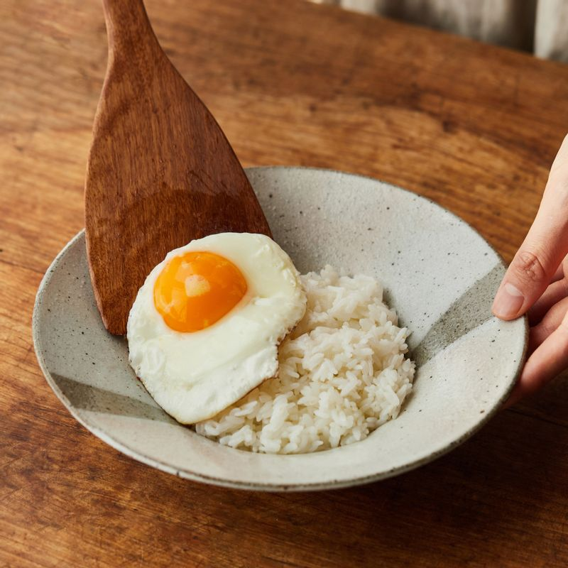
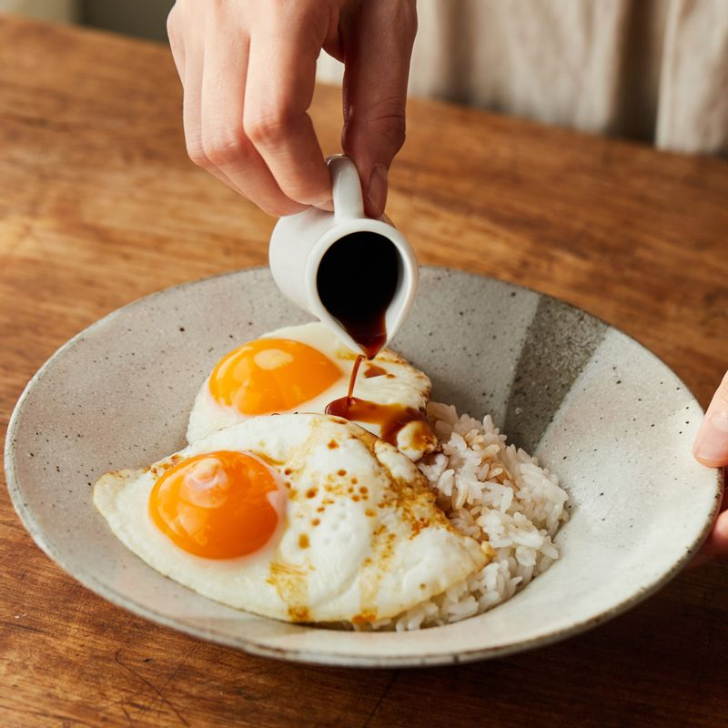

간장계란밥 만들기🍳
맛있는 간계밥을 만들어봅시다!
준비물

달걀
구매하기
밥
구매하기
김가루
구매하기
간장
구매하기
버터
구매하기
통깨
구매하기
쪽파 (대파로 대체 가능)
구매하기
참기름 (또는 들기름)
구매하기
레시피

달군 팬에 버터를 두른 후 달걀프라이를 노릇하게 구워주세요.

쪽파는 송송 썰어주세요.

그릇에 따뜻한 밥을 담은 후 달걀프라이를 얹어 주세요.

간장과 참기름을 둘러주고 통깨와 쪽파, 김가루를 뿌려 완성해 주세요.